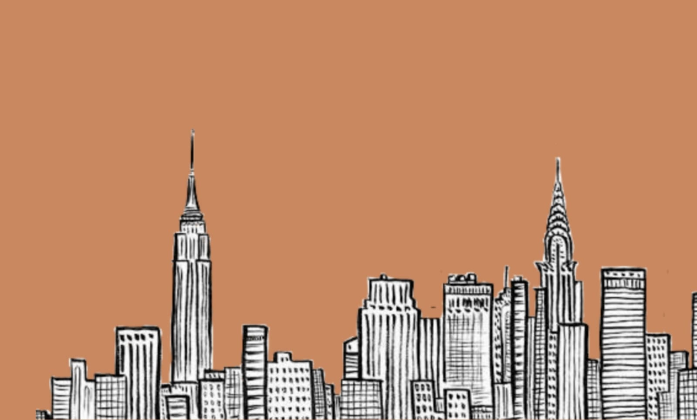
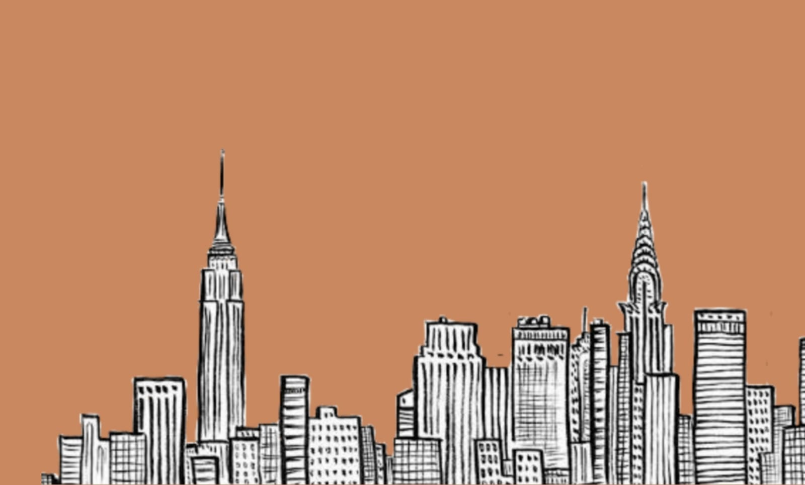

Amalfi, Italija
“Za Amalfitanca dan kada ode u raj biće isti kao svaki drugi dan” Gete. Nađite se na tlu bilo kog italijanskog grada i osetićete la dolce vita! Italiju je priroda fasinantno oblikovala i podarila joj nemerljivu lepotu. Svi putevi zaista vode u Rim, jer on je italijanska gromada, ali krenite južno od njega i uvidećete pravi sjaj Italije! Ako vam je stalo do mediteranskog duha, uputite se ka najlepšem delu italijanske obale – obali Amalfi! Obala Amalfi je jedna od najzanimljivijih i najtraženijih svetskih destinacija.
Dubrovnik, Hrvatska
Za Dubrovnik bih mogla da kažem da je jedan poseban i drugačiji grad. Ako vas zanima šta videti u Dubrovniku, uronite duboko u ovaj tekst. Priznajem da me je Dubrovnik “kupio” čim sam ga ugledala, a da još ništa nisam znala o njemu. Tako čaroban i tako romantičan grad, da u njemu ne može da vam bude bezveze ili da se loše provedete. Ja sam imala prilike da ga upoznam, pre svega sa gradskih zidina, a zatim i šetnjom kroz uske prolaze grada.
Budimpešta, Mađarska
Postoje putovanja koja se planiraju, ali i ona koja iskrsnu. Povodom mog rodjendana dopala mi se ideja da se nas dvoje brzo organizujemo i negde otputujemo. Izbor je pao na Budimpeštu, zato što je metropola koja je blizu, a mi je još nikako nismo posetili. Na Bookingu smo našli smeštaj koji se nalazi na 10 minuta od Vaci ulice. Besprekorno čisto i opremljeno da zadovolji sve potrebe, sa besplatnim parkingom u dvorištu.
Pariz, Francuska
Montmartre brdo je najviša tačka Pariza koja gleda na ceo grad. Brdo je prepoznatljivo po bazilici Sacre Coeur i njegovoj prepoznatljivoj beloj kreda boji. Čak se možete i penjati na kupolu bazilike za samo 5 €. Zanimljiva činjenica o Montmartreu je da je nekad bila četvrt u kojoj je živjela radnička klasa, i tamo je većina umetnika živela u siromaštvu, a danas je jedan od najskupljih pariških četvrti po pitanju najma stanova.

Istanbul, Turska
Počevši od svoje bogate istorije, od prodavaca u čuvenoj Kapali Čaršiji koji će vam dobacivati na lošem ruskom, preko uskih uličica koje imaju pogled na more, pa sve do istorijskih spomenika koje krase ovaj jedinstveni grad, Istanbul će učiniti da vaše putovanje bude sve, samo ne obično. Ovde se svuda oseća taj čuveni spoj istoka i zapada, što u hrani, začinima pa i do samog karaktera stanovništva, a to ćete svakako primetiti ukoliko se budete opredelili da pojedete neko od tradicionalnih jela.
Prag, Češka
Prepun predivnih veselih zgrada, iz različitih perioda, od renesansnih, baroknih, rokoko pa sve do pravaca 20. veka, perfektno restauriranih i održavanih. Romantične, kaldrmisane ulice koje je stvarno čudno kako su tako očuvane pored miliona turista koji svakodnevno njima prolaze. Posebnu čar daju i taxi ˝oldtimer˝ i kočije kojima se možete provozati gradom.Kada kročite u njega sa svim tim zgradama iz prošlih perioda, kolima, kočijama kao da ste se vratili u neko renesansno doba ili pak uskočili u neki film.
Barselona, Španija
Grad modernizma i kreativnog zanosa. Okupan suncem i morem sa najlepšim gradskim plažama na Mediteranu. Grad fudbalske groznice, olimpijskih stadiona i utakmica koje su pisale istoriju sporta. Grad koji živi na ulicama, gde se reke turista slivaju niz La Ramblu u svako doba dana i noći. Grad gde Zapad troši na poroke i gde se Katalonija šepuri svojim urbanističkim postignućima. Grad koji pulsira u ubrzanom ritmu pijaca, barova, trgova.Grad koji živi pod svetlima i senkama kao večita metafora plime života, stvaranja i raznolikosti.

Ljubljana, Slovenija
Prvo što smo uradili kad smo stigli, kao i na skoro svakom putovanju, je šetnja po centru i razgledanje najpoznatijih znamenitosti. Ljubljanica, reka koja protiče kroz Ljubljanu, je predivne zelene boje, a na njoj je nekoliko lepih mostova, tako da šetnja pored reke uvek prija. Uz reku postoji i mnogo restorana i kafića. Najpoznatiji mostovi su Zmajski most i Tromostovje, delo poznatog arhitekte Jože Plečnika. Simbol Ljubljane je zmaj, pa ćete zmaja viđati ne samo u suvenirnicama nego i na spomenicima po gradu, a između ostalog i na Zmajskom mostu.
Kontakt telefon:
+381650311133
Mejl:
mablog@gmail.com